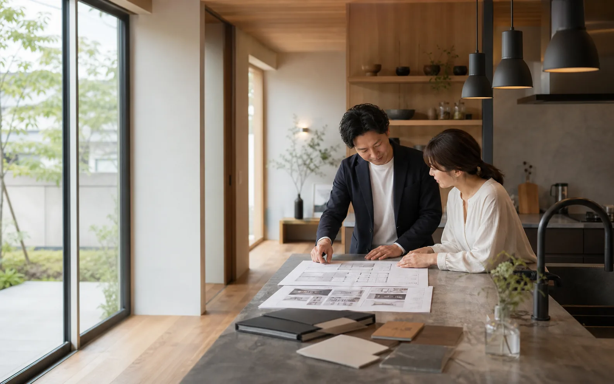
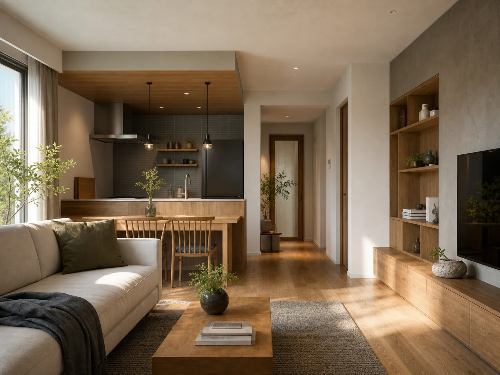

現地写真、図面、設備品番があるかを確認。
Local renovation / estimate support
暮らしの違和感を、現地調査前に整理する。
キッチン、LDK、水回り、収納。写真を送る前の相談内容をチャットで整理し、担当者が概算と現地調査を案内しやすい状態にします。

相談前に整理すること
場所 / 築年数 / 困りごと / 希望時期
Before visit
いきなり訪問ではなく、まず相談票を作る。
リフォーム相談で不安になりやすい「何を伝えればいいか」を先に整理します。担当者は現地調査前に状況を把握でき、見積もりの精度を上げやすくなります。
全面改修か、部分改修か、優先順位を整理。
希望額と上限、補助金確認の必要性を把握。
Selected works
完成イメージを、事例で先に合わせる。

LDK renovation
築32年戸建てのLDK改修
壁付けキッチンを対面に変更し、収納と家事動線を再設計。
配管位置と収納量を先に確認。
断熱、段差、清掃性を整理。
生活用品の量から設計。
Estimate board
概算は、価格表より相談内容で変わる。
工事範囲、設備グレード、現地状況を分けて聞くことで、営業担当が返しやすい相談票にします。
- キッチン
- 80万から
- 浴室
- 90万から
- LDK
- 180万から
Process
相談から現地調査までの不安を減らす。
場所、悩み、希望時期を整理。
必要な資料を案内。
範囲とグレード別に確認。
担当者が訪問日程を調整。
Contact
写真を送る前に、相談内容をまとめる。
工事内容が固まっていなくても、困っている場所から相談できます。チャットで一次整理し、担当者確認へつなげます。